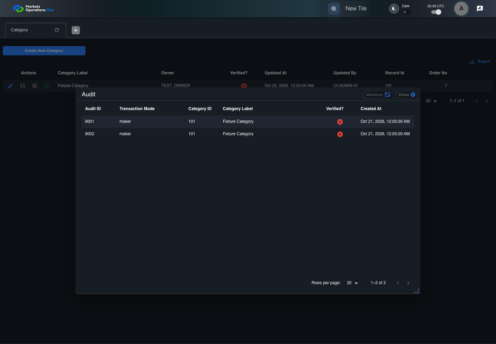

UI-ADM-CAT-014 actual administration UI with step evidence
PASS · application/run-050/ui-adm-cat-014-actual-administration-ui-with-step-evidence-c411119918ca-attempt-1 · ACTUAL_APPLICATION_LOCAL_SERVICES
Actual current React administration screens. Controlled browser login supplies UI-ADMIN-01 and TEST_OWNER, or the declared SUPER_USER. Controlled BFF routes return the case-declared records. Other controlled saves persist submitted field values. This run establishes frontend handling only. It does not execute BFF validation, storage, audit generation, or authorization.
2026-10-22T05:59:15.025Z to 2026-10-22T05:59:18.417Z
Assertions and result · Artifact manifest · Exact run inputs and source hashes
Result SHA-256:cb979bdaeba1ad64a4bdfdef6440e9657ee416ddab972e60cc9cd5fd67565387Machine observations
- ui-origin-admin-requests.json
9d75b3921d837e2a3522d4e51bf8af71ba0d3b7f33ac0a21fc0d2997116c192a
Screenshot capture: CAPTURED. Named frames: 9.
Step screenshot bindings: COMPLETE. 8/8 canonical steps have execution screenshots.
Bindings measure structural coverage only. They do not establish screenshot content quality or relevance.
Screenshot content review: NOT_REVIEWED. Recorded context: 0/9 frames. Identical image bytes: 6 repeated frames. Recorded context does not establish human visual review.
Canonical step timeline
Given Admin A is authenticated as fixture UI-ADMIN-01 with the case-specific permissions
Execution: PASSED.1. step-01 Visible state after step 1: Given Admin A is authenticated as fixture UI-ADMIN-01 with the case-specific permissions
2026-10-22T05:59:16.183Z · 1440×1000
Step: /Users/lushevol/code/github/ratan-release-impact/workbench/tasks/ui-test-coverage-20261022/test-cases.md:8100
SHA-256:be85fc0eb4cfbd70a2159640a8789a93e8c37b2baceb6f51c245ede93eba2be5And the Category admin screen is open for UI-ADMIN-01; fixture record 101 is inactive and has Category Label Fixture Category; its owner is TEST_OWNER; the audit response contains audit IDs 9001 and 9002 for applicationCategoryId 101
Execution: PASSED.
2. step-02 Visible state after step 2: And the Category admin screen is open for UI-ADMIN-01; fixture record 101 is inactive and has Category Label Fixture Category; its owner is TEST_OWNER; the audit response contains audit IDs 9001 and 9002 for applicationCategoryId 101
2026-10-22T05:59:17.049Z · 1440×1000
Step: /Users/lushevol/code/github/ratan-release-impact/workbench/tasks/ui-test-coverage-20261022/test-cases.md:8101
SHA-256:10f05a3621edb44e73914974b279c5d7bcf0c97d74865b976fa4d2e395f3fef2When Admin A clicks icon button named "Audit" inside row with Record Id "101" in the "Category" administration data grid
Execution: PASSED.
3. step-03 Visible state after step 3: When Admin A clicks icon button named "Audit" inside row with Record Id "101" in the "Category" administration data grid
2026-10-22T05:59:17.341Z · 1440×1000
Step: /Users/lushevol/code/github/ratan-release-impact/workbench/tasks/ui-test-coverage-20261022/test-cases.md:8102
SHA-256:5a48ec8f11b04f808409ea792ac7e276c955614636d812197bbc32af6984f02eThen dialog named "Audit" inside the "Category" administration tabpanel is visible
Execution: PASSED.
4. step-04 Visible state after step 4: Then dialog named "Audit" inside the "Category" administration tabpanel is visible
2026-10-22T05:59:17.414Z · 1440×1000
Step: /Users/lushevol/code/github/ratan-release-impact/workbench/tasks/ui-test-coverage-20261022/test-cases.md:8103
SHA-256:5a48ec8f11b04f808409ea792ac7e276c955614636d812197bbc32af6984f02eImage bytes match frame 3. An unchanged image can be valid for consecutive assertions. This match does not establish correct step content.
And row with source identity "9001" inside the data grid in the Audit dialog inside the "Category" administration tabpanel is visible
Execution: PASSED.
5. step-05 Visible state after step 5: And row with source identity "9001" inside the data grid in the Audit dialog inside the "Category" administration tabpanel is visible
2026-10-22T05:59:17.504Z · 1440×1000
Step: /Users/lushevol/code/github/ratan-release-impact/workbench/tasks/ui-test-coverage-20261022/test-cases.md:8104
SHA-256:5a48ec8f11b04f808409ea792ac7e276c955614636d812197bbc32af6984f02eImage bytes match frame 4. An unchanged image can be valid for consecutive assertions. This match does not establish correct step content.
And the source-record identifier cell in row with source identity "9001" inside the data grid in the Audit dialog inside the "Category" administration tabpanel equals "101"
Execution: PASSED.
6. step-06 Visible state after step 6: And the source-record identifier cell in row with source identity "9001" inside the data grid in the Audit dialog inside the "Category" administration tabpanel equals "101"
2026-10-22T05:59:17.596Z · 1440×1000
Step: /Users/lushevol/code/github/ratan-release-impact/workbench/tasks/ui-test-coverage-20261022/test-cases.md:8105
SHA-256:5a48ec8f11b04f808409ea792ac7e276c955614636d812197bbc32af6984f02eImage bytes match frame 5. An unchanged image can be valid for consecutive assertions. This match does not establish correct step content.
And row with source identity "9002" inside the data grid in the Audit dialog inside the "Category" administration tabpanel is visible
Execution: PASSED.
7. step-07 Visible state after step 7: And row with source identity "9002" inside the data grid in the Audit dialog inside the "Category" administration tabpanel is visible
2026-10-22T05:59:17.680Z · 1440×1000
Step: /Users/lushevol/code/github/ratan-release-impact/workbench/tasks/ui-test-coverage-20261022/test-cases.md:8106
SHA-256:5a48ec8f11b04f808409ea792ac7e276c955614636d812197bbc32af6984f02eImage bytes match frame 6. An unchanged image can be valid for consecutive assertions. This match does not establish correct step content.
And the source-record identifier cell in row with source identity "9002" inside the data grid in the Audit dialog inside the "Category" administration tabpanel equals "101"
Execution: PASSED.
8. step-08 Visible state after step 8: And the source-record identifier cell in row with source identity "9002" inside the data grid in the Audit dialog inside the "Category" administration tabpanel equals "101"
2026-10-22T05:59:17.763Z · 1440×1000
Step: /Users/lushevol/code/github/ratan-release-impact/workbench/tasks/ui-test-coverage-20261022/test-cases.md:8107
SHA-256:5a48ec8f11b04f808409ea792ac7e276c955614636d812197bbc32af6984f02eImage bytes match frame 7. An unchanged image can be valid for consecutive assertions. This match does not establish correct step content.
Additional named frames

The final visible state after the named test assertions.
2026-10-22T05:59:17.908Z · 1440×1000Step: Test source: /Users/lushevol/code/github/ratan-release-impact/workbench/e2e/audit-specs/admin-expanded.spec.ts:15
SHA-256:
5a48ec8f11b04f808409ea792ac7e276c955614636d812197bbc32af6984f02eImage bytes match frame 8. An unchanged image can be valid for consecutive assertions. This match does not establish correct step content.
Screenshots establish visible state only. Assertions and traces support functional claims.